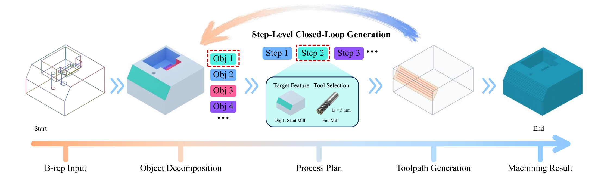
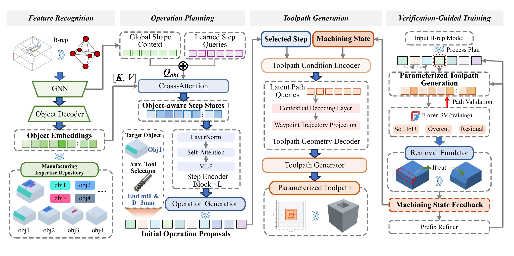
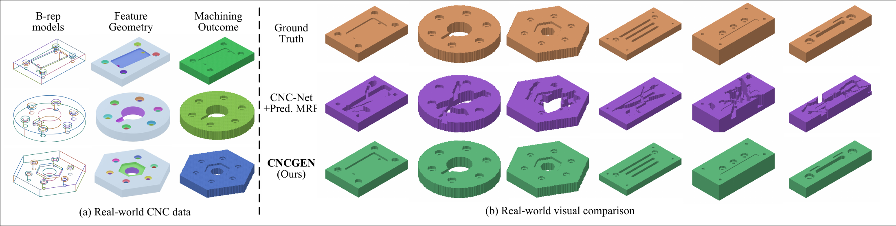

Synthetic test set
0.2318→0.9016
CNC-Net + Pred. MRP → CNCGEN
CNCGEN / Research project
Discrete operation decisions and continuous tool motion,
connected by shared manufacturing objects and evolving stock.

01 / Demo
Two recorded material-removal simulations with step-by-step explanations. Accelerated portions are marked.
02 / Method
Each toolpath acts on the stock left by earlier cuts. CNCGEN connects operation planning and toolpath generation through shared manufacturing objects, uses the evolving state to refine subsequent steps, and learns material-removal consequences through verifier feedback.

03 / Dataset
B-rep geometry, object-referenced operations, toolpaths, stock states, and verification outcomes for three-axis machining.
04 / Results

Material-removal F1 under offline geometry evaluation: adapted CNC-Net with predicted region priors versus CNCGEN. Higher is better.
Synthetic test set
0.2318→0.9016
CNC-Net + Pred. MRP → CNCGEN
Held-out real records
0.1170→0.8126
CNC-Net + Pred. MRP → CNCGEN
Ablations show that similar sequence accuracy can hide very different material-removal quality, supporting state-conditioned toolpaths. See the paper for full comparisons and ablations.
05 / Citation
@misc{zhou2026cncgen,
title = {CNCGEN: A Dataset and Framework for Machining Process
Planning and Toolpath Generation from B-rep Models},
author = {Zhou, Xiaolei and Lin, Boyi and Feng, Yuchao and Zheng, Jianwei},
year = {2026},
note = {Preprint}
}Research toolpaths require machine-specific post-processing and safety checks. Scope and limitations are described in the paper.